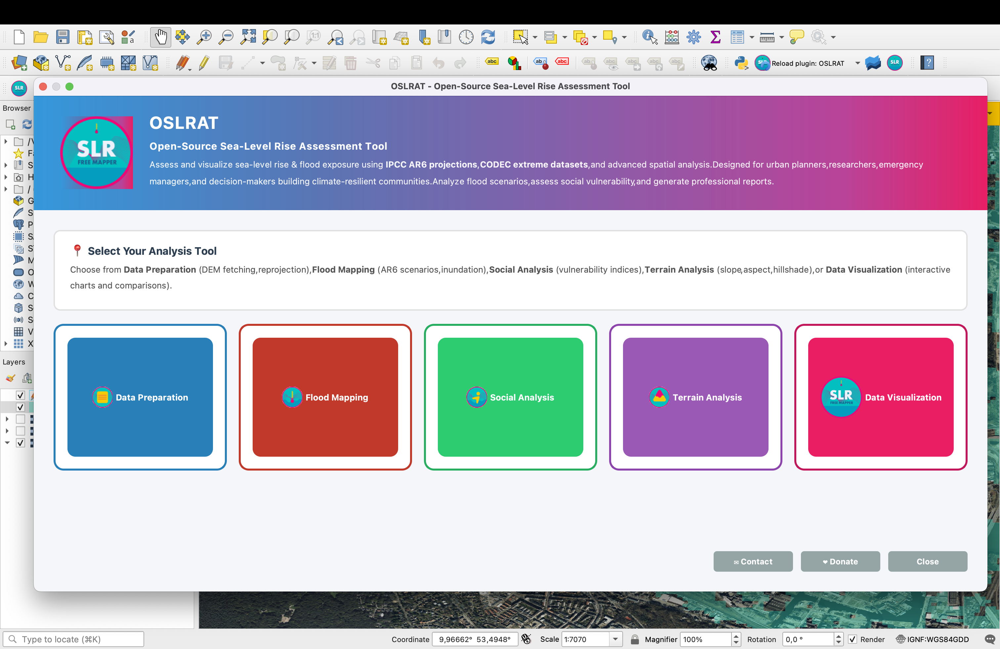

Getting Started
OSLRAT (SLR Vulnerability Mapper) is a professional QGIS plugin for mapping sea-level rise
vulnerability and flood exposure in coastal regions. It provides a comprehensive suite of
19 processing algorithms organized into 5 categories for complete coastal analysis workflows.
System Requirements
- QGIS: Version 3.30 or higher
- Python: 3.9+ (included with QGIS)
- RAM: 8GB minimum, 16GB+ recommended for large DEMs
- Disk Space: 500MB for plugin + datasets
- Internet: Required for DEM downloads (OpenTopography API)
- Operating System: Windows 7+, macOS 10.13+, Linux (Ubuntu 16.04+)

OSLRAT QGIS Plugin Interface
OSLRAT provides a comprehensive suite of 19 processing algorithms organized into 5 powerful modules.
Each module is designed to handle a specific aspect of coastal vulnerability assessment, from data
preparation through visualization. The intuitive interface allows researchers and planners to conduct
complete sea-level rise analyses entirely within QGIS.
Installation
Method 1: QGIS Plugin Repository (Recommended)
Install directly from the QGIS Plugin Manager:
- Open QGIS 3.30 or higher
- Go to Plugins → Manage and Install Plugins
- Search for "SLR Vulnerability Mapper" or "OSLRAT"
- Click Install Plugin
- Restart QGIS to activate
Method 2: Manual Installation
Download and install manually from GitHub:
# Download from GitHub Releases
git clone https://github.com/christianxcorral/slr_vulnerability_mapper.git
# Copy to QGIS plugins directory:
# Windows: C:\Users\<User>\AppData\Roaming\QGIS\QGIS3\profiles\default\python\plugins\
# macOS: ~/Library/Application Support/QGIS/QGIS3/profiles/default/python/plugins/
# Linux: ~/.local/share/QGIS/QGIS3/profiles/default/python/plugins/
Verify Installation
After installation, verify the plugin is active:
- Go to Plugins → Manage and Install Plugins → Installed
- Ensure "SLR Vulnerability Mapper" is checked/enabled
- Look for the plugin icon in the toolbar (sea wave icon)
- Access algorithms via Processing → Toolbox → SLR Vulnerability
Quick Start
Here's a simple workflow to perform your first sea-level rise flood analysis:
Basic Flood Mapping Workflow
-
Step 1: Download DEM
Open Processing Toolbox → SLR Vulnerability → Data Preparation → Fetch DEM from OpenTopography
Select your coastal area extent, choose resolution (30m or 90m), and download.
-
Step 2: Prepare Area of Interest (AOI)
Create or import a polygon layer defining your study area (cities, neighborhoods, parcels).
-
Step 3: Run Flood Scenario
Open SLR Vulnerability → Flood Exposure → DEM Flood Scenario (AR6 CSV)
Select: DEM layer, AOI polygons, SSP scenario (e.g., SSP2-4.5), Year (e.g., 2100), Percentile (p50 median)
-
Step 4: View Results
Output includes: Binary flood raster (1=flooded, 0=dry) and AOI polygons with statistics
(flooded area, percentage, impact metrics)
Algorithm Categories
- Data Preparation (4 algorithms): DEM fetch, vector/raster conversion, CRS reprojection
- Flood Exposure (6 algorithms): AR6 scenarios, compound flooding, batch processing
- Social Analysis (1 algorithm): Social Vulnerability Index (SVI)
- Terrain Analysis (3 algorithms): Slope, aspect, hillshade
- Visualization (4 algorithms): Heatmaps, area comparison, population impact
📦 Data Preparation
Prepare and transform your geospatial data for analysis. OSLRAT includes 4 essential data preparation tools:
- Fetch DEM (OpenTopography): Automatically download high-resolution Digital Elevation Models from OpenTopography's global database. Supports 30m and 90m resolution DEMs.
- Fetch OSM Buildings and Streets: Download OpenStreetMap building footprints and street networks for your area of interest.
- Reproject Vector: Transform vector layers between coordinate reference systems (CRS) for consistent spatial analysis.
- Vector to Raster / Raster to Vector: Convert between data formats to match your analysis requirements.
How to Use:
Access via Processing Toolbox → SLR Vulnerability Mapper → Data Preparation. Start with "Fetch DEM from OpenTopography" to download elevation data for your coastal area.
🌊 Flood Mapping
Generate comprehensive flood scenarios using multiple methodologies. OSLRAT provides 5 advanced flood mapping algorithms:
- DEM Flood Scenario (AR6): IPCC AR6 sea-level rise scenarios (SSP1-1.9 through SSP5-8.5) with projections from 2020-2150.
- DEM Flood + Return Period (CODEC): Combine sea-level rise with extreme water levels for compound flooding analysis.
- Inundation Mapping: Simple bathtub model for quick flood extent visualization.
- Point Flooding: Analyze flood depth at specific locations for detailed impact assessment.
- Flood Hazards (Fast): Rapid batch processing for multiple scenarios and time periods.
- IPCC Flood Scenarios: Standardized scenarios following IPCC methodologies.
How to Use:
Select Flood Exposure → DEM Flood Scenario (AR6 CSV). Choose your DEM, area polygons, SSP scenario (e.g., SSP5-8.5), target year (2100), and confidence level (50th percentile for median projection).
👥 Social Vulnerability Analysis
Calculate the Social Vulnerability Index (SVI) to identify communities most at risk from sea-level rise impacts.
- Social Vulnerability Index: Multi-dimensional index combining demographic, socioeconomic, and infrastructure vulnerability factors.
- Vulnerability Metrics: Analyzes population density, age demographics, income levels, housing quality, and access to resources.
- Spatial Distribution: Maps vulnerability hotspots to prioritize adaptation investments and emergency planning.
- Equity Analysis: Identifies disadvantaged communities that may lack resources for climate adaptation.
How to Use:
Navigate to Social Analysis → Social Vulnerability Index. Input your demographic and census data layers, specify vulnerability factors, and generate a composite vulnerability map for your study area.
⛰️ Terrain Analysis
Analyze topographic characteristics that influence flood patterns and coastal vulnerability. 3 essential terrain tools:
- Slope: Calculate terrain gradient to identify steep vs. flat areas. Critical for understanding drainage patterns and flood accumulation zones.
- Aspect: Determine the direction of slope orientation. Useful for understanding coastal exposure and wave impact directions.
- Hillshade: Generate 3D-like terrain visualization for improved spatial understanding and presentation-quality maps.
How to Use:
Access via Terrain Analysis menu. Select your DEM layer and choose the terrain metric. Slope analysis is particularly useful for identifying areas where water will pool versus drain naturally.
📊 Data Visualization
Create interactive dashboards and publication-ready visualizations to communicate flood risk to stakeholders.
- Interactive Data Visualization Dashboard: Build custom dashboards with charts, graphs, and map comparisons for comprehensive risk communication.
- Temporal Comparisons: Visualize how flood risk evolves across different time periods (2050, 2100, 2150).
- Scenario Comparisons: Compare different SSP pathways to show the impact of climate mitigation efforts.
- Export Capabilities: Generate high-resolution graphics for reports, presentations, and publications.
How to Use:
Select Data Visualization → Interactive Data Visualization Dashboard. Load your flood analysis results and create custom views combining maps, statistics, and charts for stakeholder presentations.
Data Visualization
OSLRAT provides multiple visualization options for different use cases.
Interactive Maps
# Create an interactive map
map_view = oslrat.InteractiveMap(
center=(37.7749, -122.4194),
zoom=11
)
# Add sea-level rise layer
map_view.add_slr_layer(
year=2100,
scenario='SSP5-8.5',
opacity=0.7
)
# Add vulnerable infrastructure
map_view.add_infrastructure_layer()
# Display the map
map_view.show()
Time Series Charts
# Plot time series for multiple scenarios
chart = oslrat.TimeSeriesChart()
chart.plot(
data=projections,
scenarios=['SSP1-2.6', 'SSP2-4.5', 'SSP5-8.5'],
confidence_intervals=True,
style='publication'
)
chart.save('timeseries.png', dpi=300)
Risk Assessment
Conduct comprehensive risk assessments for coastal areas.
# Define study area
study_area = oslrat.StudyArea.from_bounds(
north=37.8324,
south=37.7074,
east=-122.3549,
west=-122.5194
)
# Run risk assessment
assessment = oslrat.RiskAssessment(study_area)
results = assessment.analyze(
scenarios=['SSP2-4.5', 'SSP5-8.5'],
years=[2050, 2100],
include_population=True,
include_infrastructure=True,
include_economic_impact=True
)
# Generate report
report = results.generate_report(
format='pdf',
include_maps=True,
include_recommendations=True
)
report.save('risk_assessment_report.pdf')
Note on Uncertainty
All projections include uncertainty ranges. Always consider the
full range of possible outcomes in your planning.
Scenario Planning
Compare different emission scenarios and adaptation strategies.
# Create scenario comparison
scenarios = oslrat.ScenarioPlanner()
# Add baseline (no adaptation)
scenarios.add_scenario(
name='No Adaptation',
slr_scenario='SSP5-8.5',
adaptation_measures=[]
)
# Add adaptation scenarios
scenarios.add_scenario(
name='Seawall Protection',
slr_scenario='SSP5-8.5',
adaptation_measures=[
oslrat.Seawall(height=3.0),
oslrat.BeachNourishment(interval=5)
]
)
scenarios.add_scenario(
name='Managed Retreat',
slr_scenario='SSP5-8.5',
adaptation_measures=[
oslrat.ManagedRetreat(trigger_level=1.5)
]
)
# Compare scenarios
comparison = scenarios.compare(
metrics=['cost', 'protection_level', 'co2_reduction'],
time_horizon=2100
)
# Visualize comparison
comparison.plot_comparison()
Export & Reports
Export data and generate reports in various formats.
Data Export
# Export to various formats
results.to_csv('data.csv')
results.to_excel('data.xlsx')
results.to_geojson('data.geojson')
results.to_netcdf('data.nc')
Report Generation
# Generate comprehensive report
report = oslrat.Report()
report.add_section('Executive Summary', auto_generate=True)
report.add_section('Methodology', include_citations=True)
report.add_section('Results', include_visualizations=True)
report.add_section('Recommendations', risk_based=True)
# Export report
report.export('assessment_report.pdf', style='scientific')
report.export('assessment_report.html', interactive=True)
Processing Algorithms Reference
OSLRAT provides 19 processing algorithms accessible via the QGIS Processing Toolbox.
All algorithms support batch processing and can be integrated into QGIS models.
Flood Exposure Algorithms (6)
DEM Flood Scenario (AR6 CSV)
Maps inundation using IPCC AR6 sea-level projections. Select SSP scenario, year (2020-2150),
and percentile (p05, p17, p50, p83, p95). Outputs binary flood raster and per-polygon statistics.
DEM Flood + Return Period (CODEC)
Combines AR6 baseline SLR with CODEC storm surge return periods (1, 10, 50, 100, 1000-year events)
for compound flooding scenarios. Automatically selects nearest coastal station.
Inundation Mapping
Simple threshold-based flood mapping with user-defined water level (metres).
Point Flood Heatmap
Creates heatmap visualization of flooded areas using regular point grid. Applies Magma color ramp.
Data Preparation (4)
- Fetch DEM from OpenTopography: Automated Copernicus DEM download (30m/90m)
- Reproject Vector: CRS transformation for vector layers
- Vector to Raster: Convert polygons/points to raster grid
- Raster to Vector: Polygonize raster cells to features
Social & Impact Analysis (5)
- Social Vulnerability Index (SVI): Composite vulnerability score from demographic indicators
- Area Comparison Analysis: Compare total vs. inundated area with ratios and percentages
- Population Impact Analysis: Calculate population affected by flooding
- Feature Comparison: Attribute-based feature analysis
- Inundation Heatmap Visualization: Interactive chart generation
Terrain Analysis (3)
- Slope Analysis: Calculate slope in degrees from DEM
- Aspect Analysis: Compute aspect (direction of slope)
- Hillshade: Generate shaded relief visualization
Data Formats
Inputs: GeoTIFF, IMG, HDF, NetCDF (raster); Shapefile, GeoPackage, GeoJSON (vector)
Outputs: GeoTIFF (DEFLATE compressed), Shapefile, GeoPackage, CSV reports
Troubleshooting
Common Issues
Installation fails with dependency errors
Solution: Try creating a fresh virtual environment and installing with:
python -m venv oslrat-env
source oslrat-env/bin/activate # On Windows: oslrat-env\Scripts\activate
pip install --upgrade pip
pip install oslrat
Data download is very slow
Solution: Consider using a different data source or mirror:
slr = oslrat.SeaLevelRise(
data_source='noaa', # Try alternative source
cache_dir='/path/to/large/disk' # Use disk with more space
)
Memory errors with large study areas
Solution: Process data in smaller chunks or reduce resolution:
assessment = oslrat.RiskAssessment(
study_area,
dem_resolution='90m', # Lower resolution
chunk_size=1000 # Process in chunks
)
Still Need Help?
If you're still experiencing issues:
Next Steps